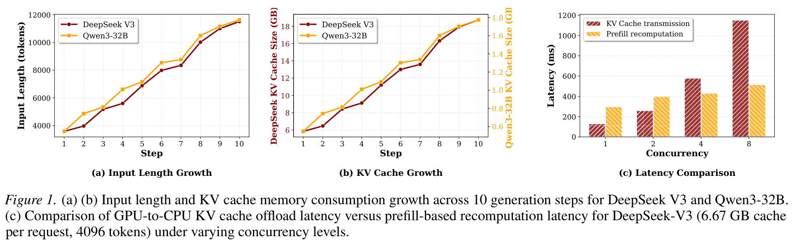
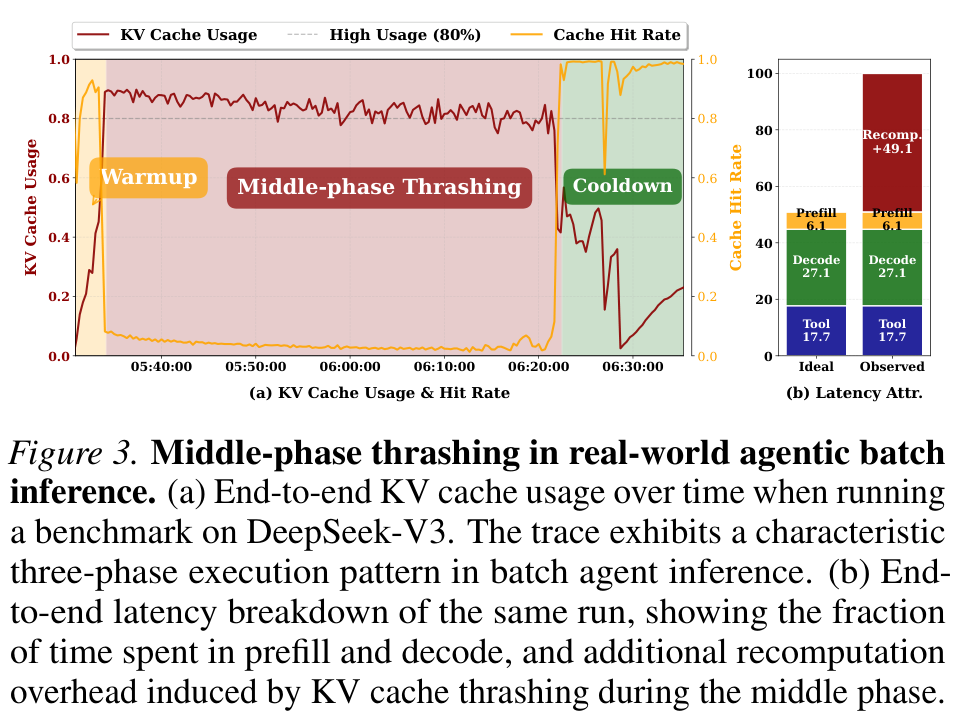
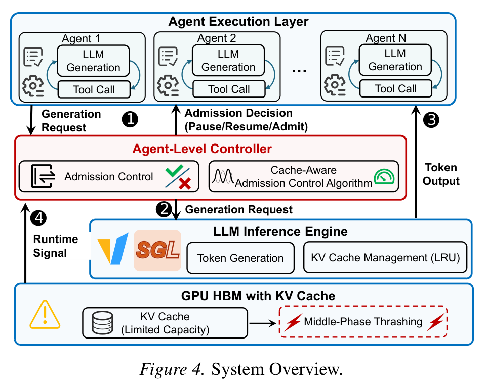
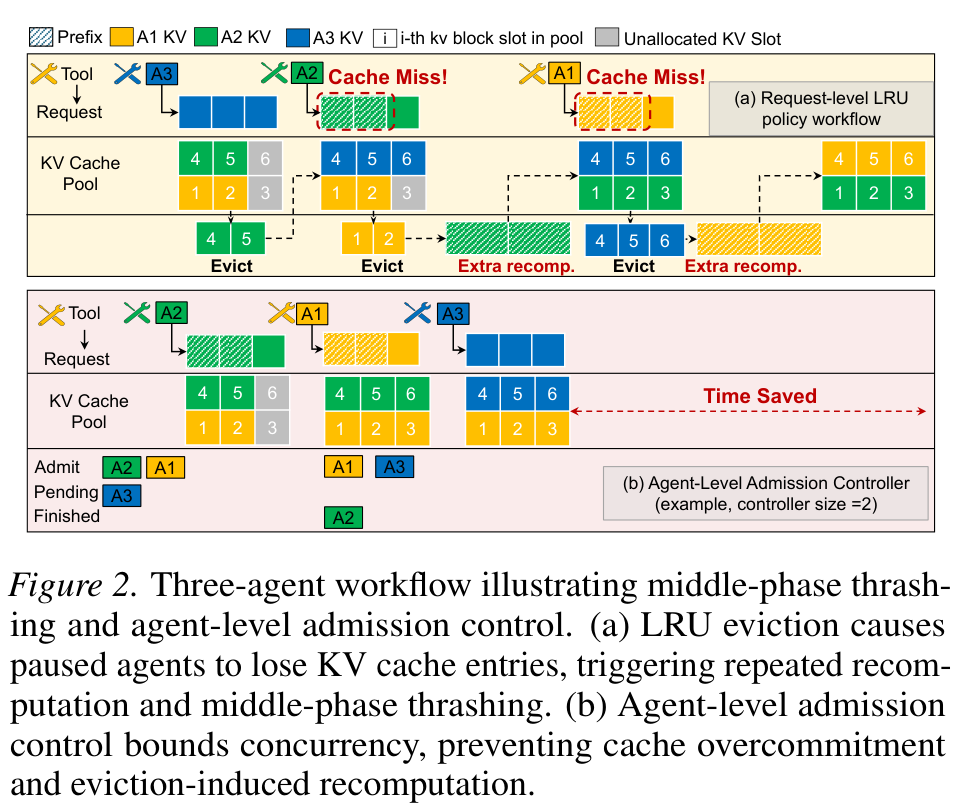
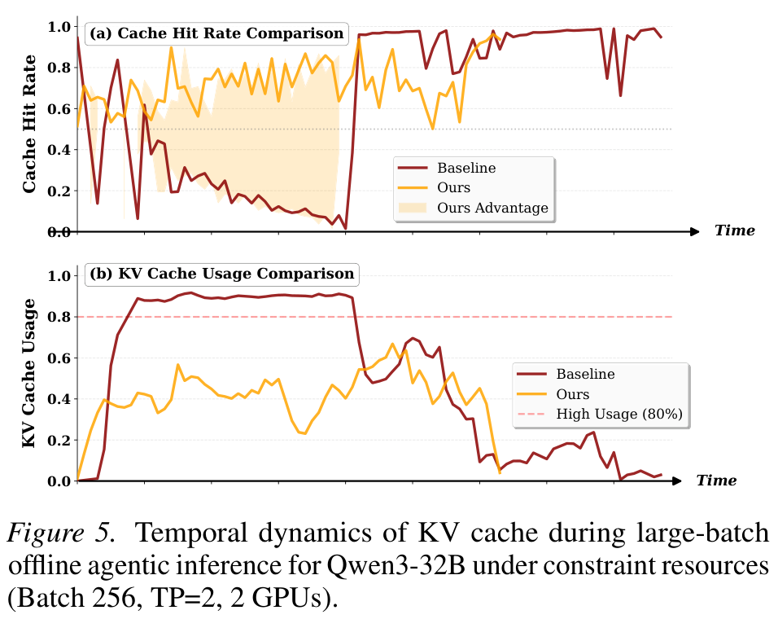
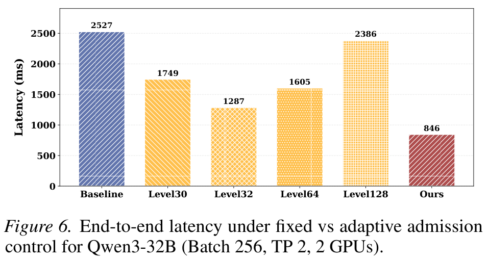

CONCUR: High-Throughput Agentic Batch Inference of LLM via Congestion-Based Concurrency Control（ICML 2026）
作者：Qiaoling Chen、Zhisheng Ye、Tian Tang、Peng Sun、Boyu Tian、Guoteng Wang、Shenggui Li、Yonggang Wen、Zhenhua Han、Tianwei Zhang。
ICML 2026
Motivation
为什么高并发会让吞吐下降
ReAct Agent 不是一次请求，而是不断循环：
LLM 生成 → 工具调用 → 工具结果回到 LLM → ……
每一轮都会把思考、工具调用和工具结果追加到上下文，因此单个 Agent 的上下文长度和 KV Cache 占用会随执行步数增长。不同 Agent 的进度又不同：有的正在 GPU 上生成，有的在等待外部工具。
这会产生一个冲突：等待工具的 Agent 暂时不发起推理请求，但下一轮仍然需要原来的 KV 前缀；其他 Agent 继续生成，持续占用新的 KV Cache；GPU 紧张时，普通 serving engine 按请求和 LRU 规则驱逐前者的缓存；工具返回后，前者只能重新 Prefill 或从 CPU 搬回 KV。因此即使 Agent 总数没有变化，也可能反复发生“驱逐 → 重算/搬运 → 再驱逐”。

Figure 1 解读： 左图和中图的横轴是 Agent 执行步数，纵轴分别是输入上下文长度和 KV Cache 占用。两条曲线都随步骤上升，说明一个 Agent 的 KV footprint 会持续变大，并不是固定大小的请求。
右图比较不同并发下的 GPU-to-CPU KV 传输与 Prefill 重算延迟，并发越高，KV 传输的柱子增长更快，说明把 KV 全部 offload 到 CPU 可能把显存问题转化为 PCIe 传输问题。
Figure 1 说明需要主动控制 working set，不是证明重算在所有硬件上都一定比 offload 快。
论文发现的 middle-phase thrashing
论文用真实部署轨迹展示了 Agent batch 推理的三阶段：

Figure 3 上图横轴是执行时间，左纵轴同时展示 KV 使用率和命中率。中间阶段 KV 使用率维持在约 80%–100%，
但命中率掉到低位，表示显存被占满却没有转化为有效缓存复用；这是 middle-phase thrashing。
- Warmup： Agent 处在较浅步骤，前缀较短且复用较多，KV 使用量低、命中率高；此时增加并发通常能提高吞吐。
- Middle phase： Agent 上下文变长，KV 使用率长期处于约 80%–100%，但命中率突然下降。系统看似一直在使用显存，实际上大量时间花在缓存驱逐和 Prefill 重算上。Figure 3 报告额外重算约占端到端延迟的 49.1%，并持续超过总执行时间的 90%。
- Cooldown： 一些 Agent 完成并释放 KV 后，压力下降，驱逐减少，命中率恢复。
作者将第二阶段称为 middle-phase thrashing。它解释了为什么继续加入 Agent 有时会适得其反：新增 Agent 不仅增加有效工作，也会把已有 Agent 推入缓存颠簸区。Figure 1 还说明上下文长度和 KV 占用会随步骤增长；当每个请求需要搬运数 GB KV 时，CPU offload 的 PCIe 传输成本也可能高于直接 Prefill。
Core Design
从 request-level 调度转向 agent-level admission
CONCUR 不重写 SGLang 的 KV 管理，而是在二者之间插入轻量的 Agent-Level Controller：
Agent Execution Layer
↓ generation request
Agent-Level Controller
↓ admit / pause / resume
LLM Serving Engine + GPU KV Cache
Figure 4 图中 Controller 位于 Agent 执行框架和 LLM serving engine 之间。Agent 仍负责工具调用和工作流循环，serving engine 仍负责 token generation 与 LRU KV 管理；
Controller 只在 Agent 边界发出 admission、pause、resume 决策，并读取 KV 使用率和命中率反馈。
每个 Agent 准备发起下一次 LLM 生成时，先向 Controller 请求 admission。被允许的 Agent 才进入 serving engine；未被允许的 Agent 暂停，不继续发请求但保留执行状态；Agent 完成并释放 KV 后，Controller 再从 pending 集合恢复其他 Agent。

Figure 2 上图中 A1、A2 在工具调用期间暂停，A3 继续生成并消耗 KV 空间；LRU 会先驱逐暂停 Agent 的前缀，A1/A2 恢复时就产生 Cache Miss 和额外重算。
下图把 admission 单位提升为 Agent：只让 A1、A2 进入 active set，A3 留在 pending；等 A2 完成并释放 KV 后再接纳 A3。
Cache-Aware Admission Control（核心调度）
固定并发上限不够用。
早期上下文较短时，128 个 Agent 可能还能运行；执行到中段后，每个 Agent 都变长，同样的上限就可能导致显存过载。反过来，一开始使用很小的固定上限又会浪费早期 GPU 容量。
借鉴借鉴 TCP 经典的 AIMD 算法
CONCUR 把允许同时活跃的 Agent 数量记为 W_t，通过两个运行时信号调节：U_t 是 KV 使用率，H_t 是 KV 命中率。
$$ W_{t+1} = \begin{cases} W_t + \alpha, & U_t < U_{\mathrm{low}} \\ W_t \times \beta, & U_t > U_{\mathrm{high}} \land H_t < H_{\mathrm{thresh}} \\ W_t, & \text{otherwise} \end{cases} $$
默认参数为 alpha = 2、beta = 0.5、U_low = 0.2、U_high = 0.5、H_thresh = 0.2。显存明显空闲时，窗口加少量 Agent；高使用率同时伴随低命中率时，窗口减半；其他情况下保持不变。
H_thresh 区分“高占用但有效复用”和“高占用且已经颠簸”。U_low 与 U_high 之间提供缓冲，减少窗口在边界附近反复增减。
Evaluation
论文评估三个问题： - Agent-level admission 能否降低整批完成时间； - 是否提高 KV 命中率并消除 middle-phase thrashing； - 动态控制是否比固定并发上限可靠。
实验在 NVIDIA H100 80GB 上进行，使用 Qwen3-32B 和 DeepSeek-V3，比较原始 SGLang、固定 request-level admission、SGLang + HiCache CPU offload 和 CONCUR。这里的 batch latency 是完成整个离线 Agent batch 的时间。
端到端延迟
Table 1 测量同一批 Agent 全部完成所需的时间，括号相对原始 SGLang。
CONCUR 在六组配置中都取得最低延迟：
| 模型与配置 | SGLang | Request Control | HiCache | CONCUR |
|---|---|---|---|---|
| Qwen3-32B，256，TP8/8 GPU | 1480s | 2049s | 976s | 362s（4.09×） |
| Qwen3-32B，256，TP4/4 GPU | 2213s | 1089s | 1678s | 757s（2.92×） |
| Qwen3-32B，256，TP2/2 GPU | 2527s | 1383s | 1112s | 846s（2.99×） |
| DeepSeek-V3，16，TP16/16 GPU | 873s | 861s | 2559s | 521s（1.68×） |
| DeepSeek-V3，32，TP16/16 GPU | 1226s | 1367s | 2277s | 1018s（1.20×） |
| DeepSeek-V3，40，TP16/16 GPU | 3877s | 2903s | 2320s | 2043s（1.90×） |
不是并发越小越好，而是动态寻找不会进入颠簸区的 active set。
原始 SGLang 在中段发生大量重算；
固定 cap 可能过于保守或仍然过载；
HiCache 命中率高但有 CPU-GPU 搬运代价；
CONCUR 则减少无效重算，把 GPU 时间用于有效生成。
KV Cache 实验：测的是缓存是否真正被复用
Table 2 使用 DeepSeek-V3、TP8、8 张 GPU，在不同 batch size 下测 KV Cache hit rate：
| Batch | SGLang | HiCache | Request Control | CONCUR |
|---|---|---|---|---|
| 16 | 80.38% | 97.48% | 69.00% | 96.38% |
| 32 | 77.72% | 97.13% | 68.39% | 93.65% |
| 40 | 35.41% | 96.08% | 32.21% | 73.36% |
原始 SGLang 的命中率随并发增加明显坍塌，batch 40 时只有 35.41%。
HiCache 命中率最高，但依赖 CPU offload；但搬运 KV 需要 PCIe 时间。
Figure 5 进一步显示，基线 KV 使用率接近容量时命中率下降，而 CONCUR 通过限制 active agent set 维持更稳定的命中率。

Figure 5 Baseline 在下图长期贴近高水位时，上图命中率逐渐跌到接近 0，说明系统陷入驱逐和重算循环；
CONCUR 的 usage 更低且波动，hit rate 则保持在较高水平。这里的收益是留出空间避免缓存 working set 进入拥塞坍塌区。
固定并发上限实验
Figure 6 在 Qwen3-32B、batch 256、TP2、2 张 GPU 上比较固定 admission level 与动态控制：
| 策略 | 完成延迟 |
|---|---|
| 无控制 | 2527ms |
| 固定 30 | 1749ms |
| 固定 32 | 1287ms |
| 固定 64 | 1605ms |
| 固定 128 | 2386ms |
| CONCUR | 846ms |

Figure 6固定 30、32、64、128 的结果呈现明显折中：level 32 比无控制好，但 level 128 又接近 baseline，说明一个固定 cap 不能适应 Agent 上下文在不同阶段的增长。
CONCUR 的动态窗口达到 846 ms，低于所有固定 level。
同时固定上限太小会浪费 GPU，太大则会在中段把 KV Cache 推入颠簸区；
Limitations
CONCUR 评估的是离线 batch inference，主要指标是整批完成时间，在线服务中的单请求 JCT、P99 SLO 和 starvation？